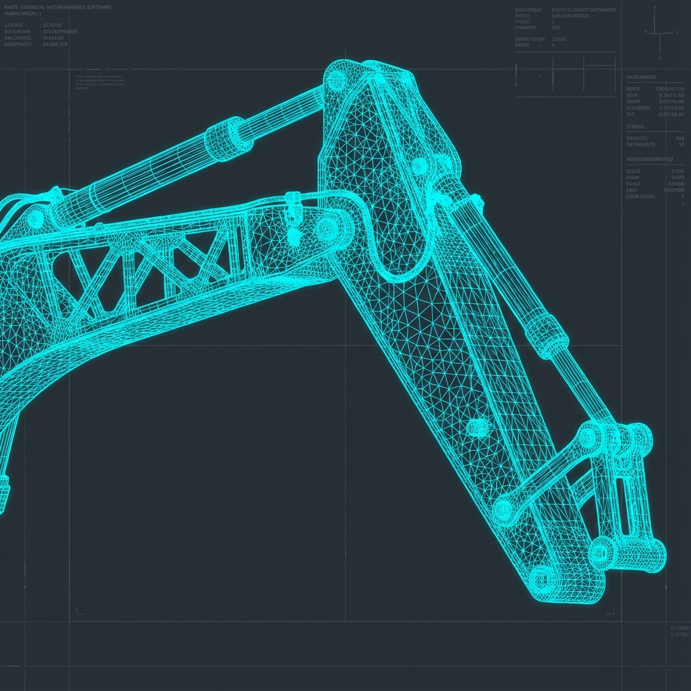
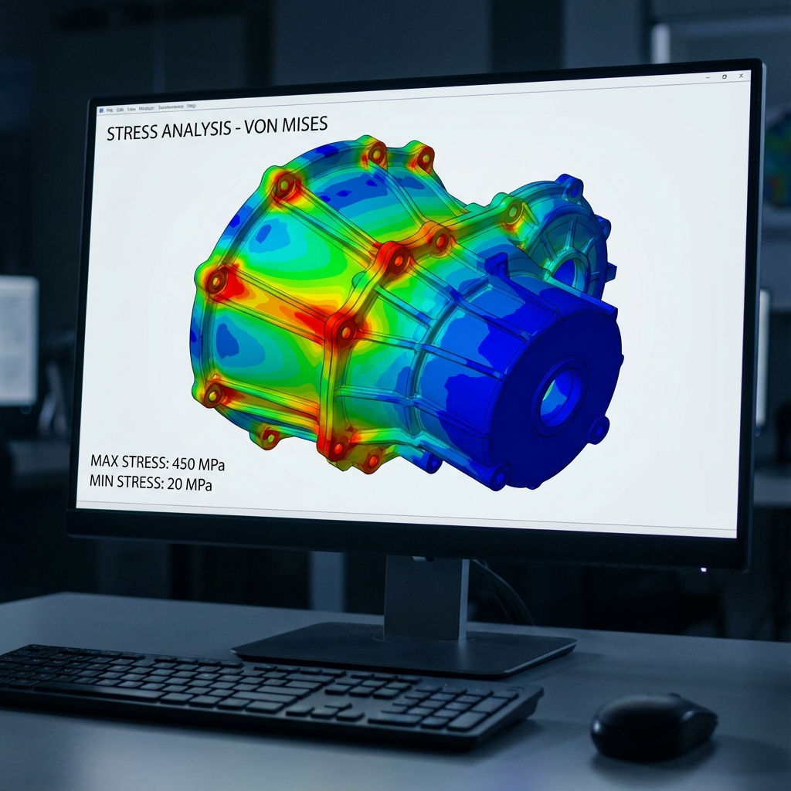
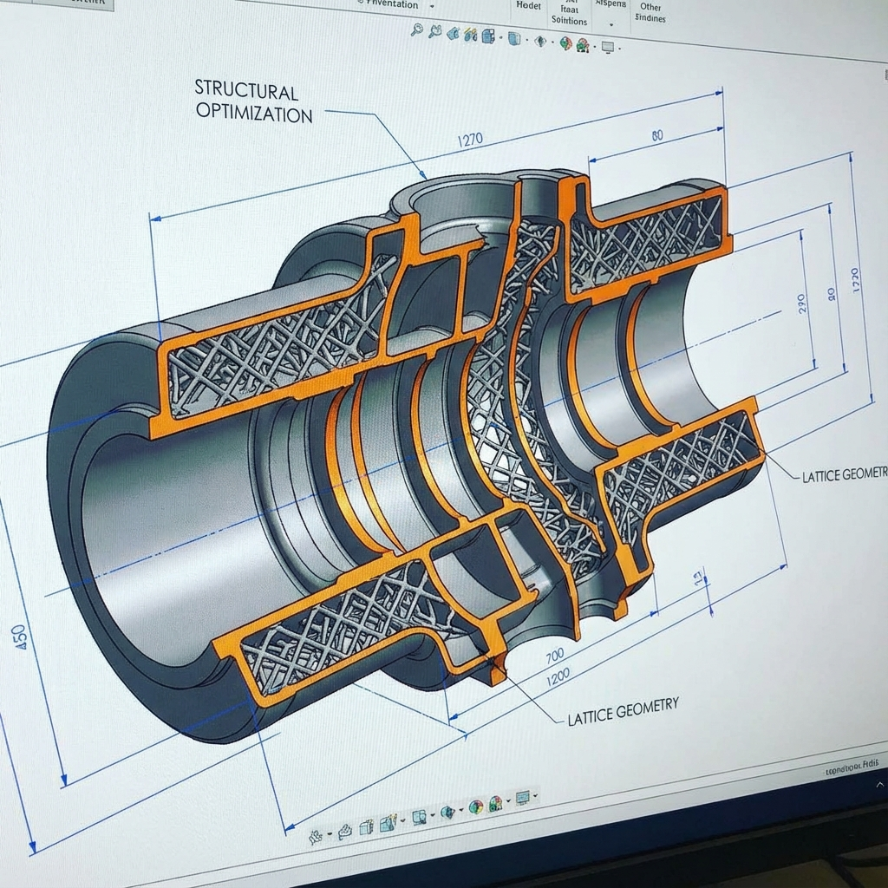
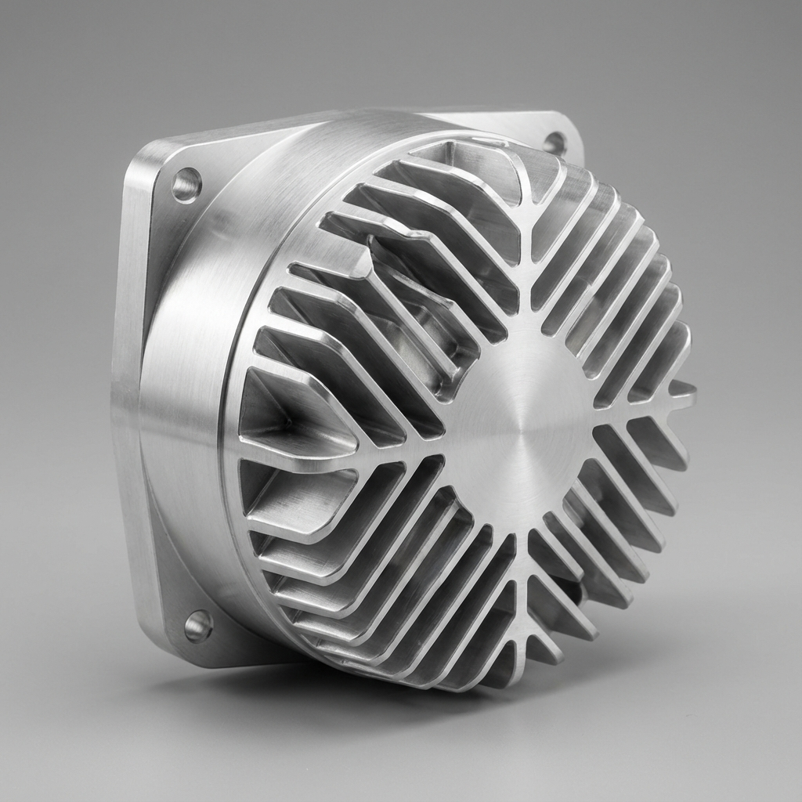

Industry
適用產業
Any Load-Bearing Product
任何有受力需求的產品
Core Benefit
你能得到什麼
Lighter. Stronger. Production-Ready.
更輕、更強、能直接量產
Tools
使用工具
Ansys / SolidWorks / Abaqus
業界主流有限元素分析軟體
Bottom Line
最終目的
No Surprises After Launch
讓你量產後不用擔心出事

Step 1 — Building the Digital Twin
第一步：建立數位分身
Before anything breaks in real life, it breaks here first. We recreate your product's geometry and the forces it will face — so the simulation is only useful if the inputs are honest.
在現實中壞掉之前，先在這裡壞掉。我們重建你產品的幾何與受力狀況，模擬結果的可信度，取決於輸入的誠實程度。

Step 2 — The Red Zones Are the Story
第二步：紅色區域就是答案
Those bright red areas aren't just colors — they're where your product would eventually crack or fatigue. Seeing them before production is worth every penny of the analysis cost.
那些鮮紅色的區域不只是顏色，那是你的產品日後最可能龜裂的位置。在量產前看到它，遠比出事後修要划算。

Step 3 — Fix Smart, Not Brute-Force
第三步：聰明補強，不是盲目加厚
Adding material everywhere is the expensive, heavy way out. Ribs and guided force paths achieve the same rigidity at a fraction of the weight — and cost. This is where good engineering pays for itself.
到處加厚是最貴、最重的解法。透過肋條設計與力流引導，用更少的料達到同等的剛性。這就是好工程師能省你錢的地方。

Step 4 — Ready to Build With Confidence
第四步：帶著信心去量產
The final structure isn't just safe — it's optimized. You go into production knowing exactly what you have, and why it works. That confidence is the real deliverable.
最終結構不只是「安全達標」，而是經過優化的。你帶著清楚的數據去量產，知道為什麼它可行。這份確定感，才是我們真正交付的東西。